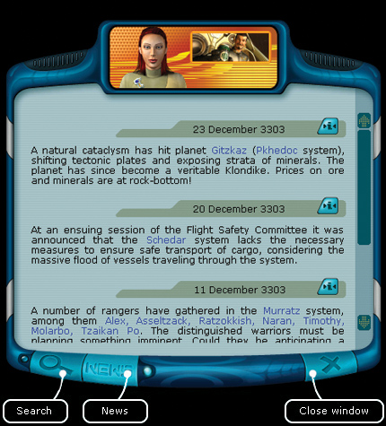
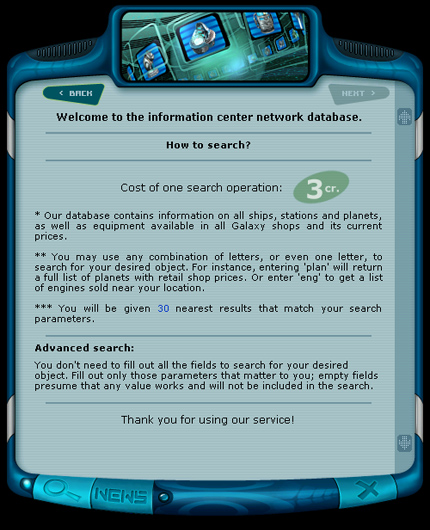
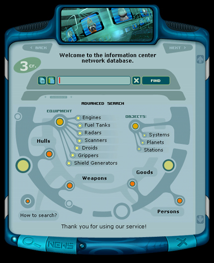
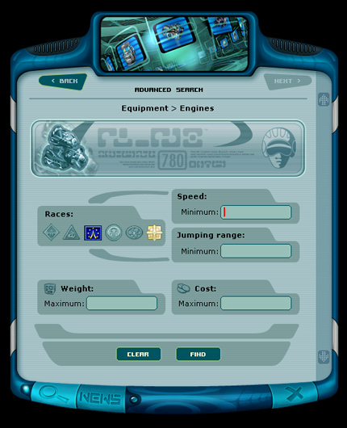
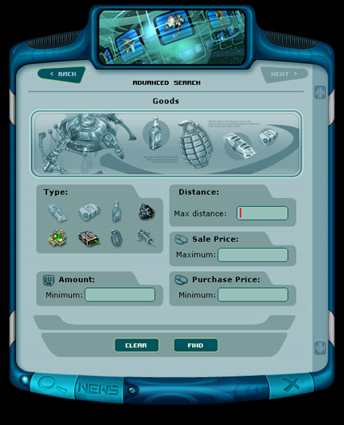
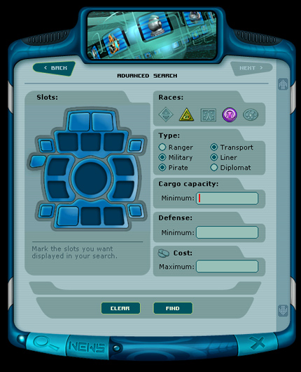
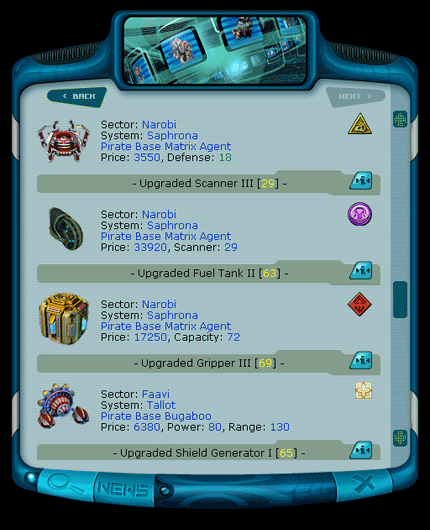

Ranger manual > Planet
screen > Information center (I)
|
Ranger manual > Planet
screen > Information center (I)
|
| Information center (I) The Information center publishes the latest galaxy news. If you read them regularly, you will have the image of all the business, political, military and scientific events in the life of the Coalition, which is essential for a successful play. The news will tell you about the liberation of some star systems from dominators, about the abrupt price reduction for the goods, about famous pirates or merchants, which appear in some certain space systems, about the invention of black holes, and, much more other useful information. |

| Hint. To quickly save an interesting
news, click |
| To switch into the search mode: • Click the button with the magnifying glass image located in the left bottom part of the window or press the I button.  To carry out a simple search: 1. Enter a part of the name/term of the object to be found into the search line. Examples for search entries: "a", "land", "lyakusha", "radar". 2. Press 'Search' button. In the Information center you will be able to switch into the advanced search mode and find out the location of any significant object, whether it is a ship, a planet, space station or some cool equipment in a shop. Thanks to this information you will be able to perform such complicated missions as search and elimination of notorious pirates.  To perform the advanced search: 1. Choose the direction of your search: equipment (by types), hulls, weapons, goods, systems, planets, stations or persons. To choose a certain direction press a relative orange button. 2. Determine the search parameters (choose the manufacturing race, prices ranges of the goods/equipment, weapons characteristics, etc.) Fill in the search cells with the required values. The more cells are filled in, the wider is the search range. 3. Press 'Search' button.  Note. It is not necessary to fill in all the cells for the object of search, fill in only what you need, empty cells will not partake in the search, in this case any value will do.  The Information center offers a wide range of opportunities to search for a ship hull you need. All at once six parameters can be included into the search: • equipment slots (you can indicate on the ship's image, which slots must be get opened with a mouse click); • race of the manufacturer; • type (ranger, pirate, trading, etc.); • cargo capacity; • protection; • price.  Note. The search is irrelevant to the upper/lower cases of the letters, i.e. the words 'Alpha' and 'alpha' are considered to be identical. The cost of one search operation - 3 cr. A successful search will show 30 close results, meeting the request.  To save the search results and the location of the required search objects, click To return into the news mode: • Press 'NEWS' button in the bottom part of the window. |